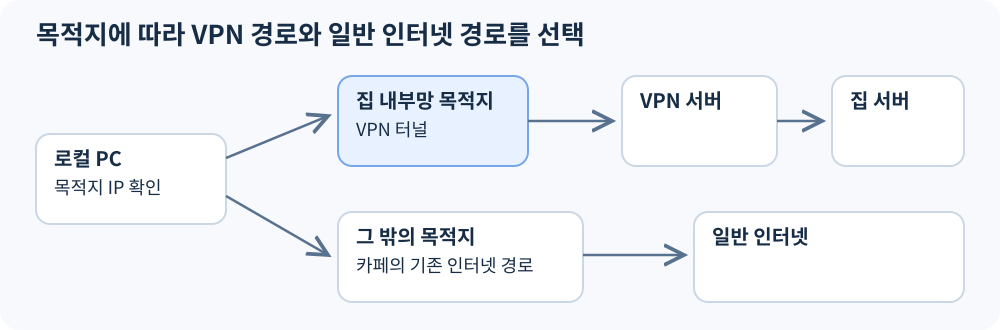
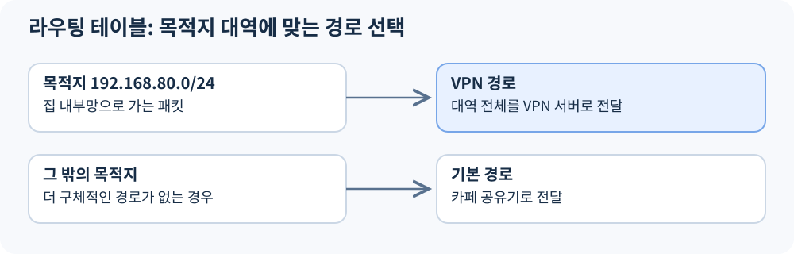
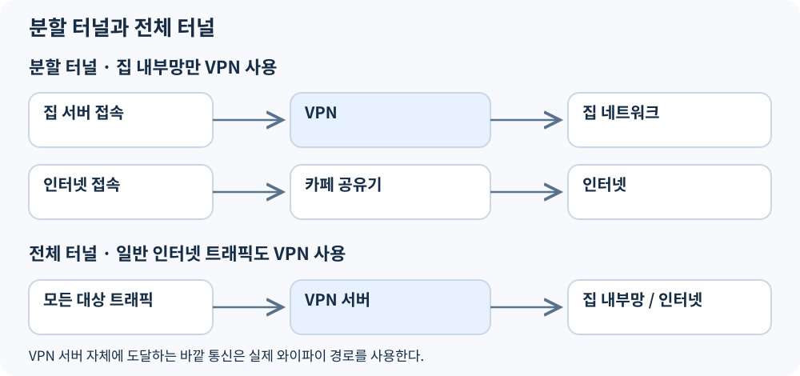
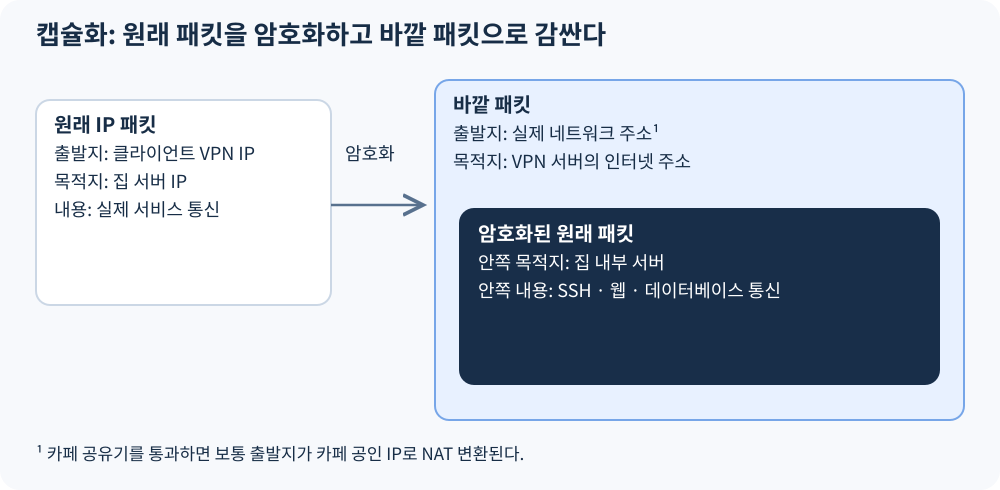
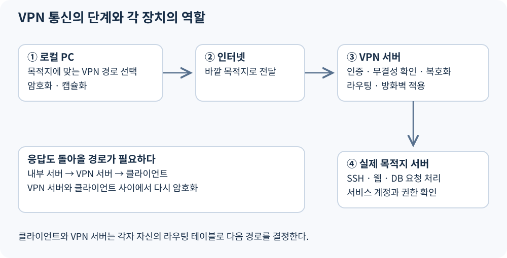
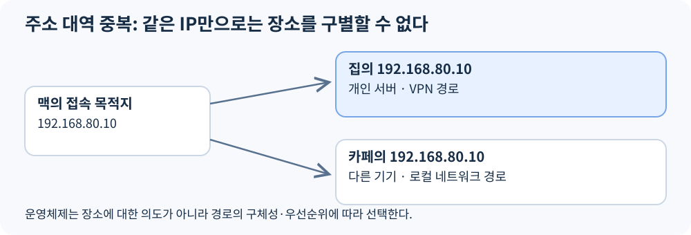

VPN을 설정한다는 것은 로컬 PC에 VPN 연결과 라우팅 규칙을 구성하여, 선택한 목적지 IP 대역으로 향하는 패킷을 VPN 서버를 통해 전달하도록 만드는 것이다.
예를 들어 스터디 카페에서 집 내부 서버에 접속하려면, 집 내부망으로 향하는 통신을 VPN 경로로 보내도록 설정한다.

이 글은 OpenVPN·WireGuard·IPsec 등으로 구성하는 일반적인 IP 기반 원격 접속 VPN을 기준으로 설명한다. IP 주소는 모두 설명용 예시다.
1. VPN 설정에는 연결 설정과 경로 설정이 함께 필요하다
VPN을 사용하려면 두 가지를 정해야 한다.
| 설정 | 결정하는 내용 |
|---|---|
| VPN 연결 설정 | 어떤 VPN 서버에 접속하고, 어떻게 인증하며, 어떤 방식으로 통신을 보호할 것인가 |
| 라우팅 설정 | 어떤 목적지로 가는 패킷을 VPN 연결로 보낼 것인가 |
VPN 서버의 주소를 안다고 집 내부망의 모든 패킷이 자동으로 그 서버에 전달되는 것은 아니다. 로컬 PC에는 해당 목적지로 가는 패킷이 VPN 경로를 사용하도록 하는 규칙도 필요하다.
이 규칙은 사용자가 직접 지정하거나, VPN 방식에 따라 서버가 전달한 설정을 클라이언트가 적용할 수 있다.
여기서 지정하는 대역은 VPN을 통해 접근할 목적지 대역이다. VPN 서버 자신의 IP 대역이나, 접속을 허용할 클라이언트 주소 목록과는 구분해야 한다.
2. 운영체제는 목적지 IP를 보고 VPN 사용 여부를 결정한다
다음과 같은 네트워크를 가정하자.
| 대상 | 주소 |
|---|---|
| 카페 네트워크 | 192.168.10.0/24 |
| 집 내부 네트워크 | 192.168.80.0/24 |
| 접속하려는 집 서버 | 192.168.80.10 |
집 내부망을 VPN으로 보내도록 설정하면 로컬 PC의 경로는 개념적으로 다음과 같다.

맥에서 192.168.80.10에 접속하려고 하면 운영체제는 라우팅 테이블을 확인한다. 목적지가 집 내부망에 해당하므로 패킷을 VPN 경로로 보낸다.
일반 인터넷 사이트에 접속하면 해당 규칙에 포함되지 않으므로 기존 카페 인터넷 경로를 사용한다.
중요한 기준은 패킷의 목적지 IP다. “집 대역에서 출발한 패킷”을 보내는 것이 아니라, “집 대역을 목적지로 하는 패킷”을 VPN으로 보내는 것이다.
3. 특정 대역만 보내면 분할 터널, 전체를 보내면 전체 터널이다
VPN으로 보낼 목적지의 범위에 따라 구성이 달라진다.
| 구성 | 동작 |
|---|---|
| 분할 터널 | 집·회사 내부망 등 지정한 목적지만 VPN으로 전송 |
| 전체 터널 | 일반 인터넷 트래픽까지 VPN으로 전송하도록 구성 |

분할 터널에서는 집 서버 통신만 VPN으로 보내고 일반 인터넷은 카페 회선을 이용한다. 전체 터널에서는 일반 인터넷 통신도 VPN 서버를 거쳐 나간다.
전체 터널이라도 VPN 서버 자체에 도달하기 위한 바깥 통신은 실제 네트워크를 사용해야 한다. 클라이언트는 이 통신이 다시 같은 터널로 들어가지 않도록 처리한다.
4. VPN은 원래 패킷을 감싸서 VPN 서버까지 운반한다
집 서버로 보내려는 원래 패킷에는 최종 목적지인 집 서버 주소가 들어 있다.
일반적인 암호화 VPN은 이 패킷을 암호화하고, VPN 서버까지 전달할 수 있는 바깥 패킷으로 감싼다. 이를 캡슐화라고 한다.

두 목적지는 역할이 다르다.
- 바깥 목적지: 인터넷을 통해 도착해야 하는 VPN 서버
- 안쪽 목적지: 실제 요청을 처리할 집 내부 서버
인터넷 라우터는 바깥 주소를 보고 패킷을 전달한다. VPN 서버는 암호화를 해제한 뒤 안쪽 주소를 확인한다.
바깥 주소까지 암호화하면 중간 라우터가 목적지를 알 수 없으므로, 전달에 필요한 바깥 헤더는 노출된다. 구체적인 포장 형식과 전송 프로토콜은 VPN 방식에 따라 다르다.
5. VPN 서버는 복호화한 패킷을 자신의 경로에 따라 전달한다
VPN 서버는 통신 상대와 무결성을 확인하고 패킷을 복호화한 뒤 실제 목적지로 전달한다.

로컬 PC와 VPN 서버의 라우팅 테이블이 같아지는 것은 아니다.
로컬 PC는 “이 목적지는 VPN으로 보낸다”고 결정한다. VPN 서버는 전달받은 패킷을 보고 “이 목적지는 내부 네트워크의 어느 경로로 보낸다”고 별도로 결정한다.
응답도 클라이언트로 돌아올 경로가 필요하다. 따라서 클라이언트의 경로만 설정했다고 통신 전체가 완성되는 것은 아니다.
6. ‘VPN으로 보낸다’와 ‘접근을 허용한다’는 별개다
클라이언트가 특정 대역의 패킷을 VPN으로 보내더라도, VPN 서버가 모두 전달해야 하는 것은 아니다.
| 단계 | 담당하는 판단 |
|---|---|
| 클라이언트 라우팅 | 이 목적지의 패킷을 VPN으로 보낼 것인가 |
| VPN 인증 | 이 클라이언트를 받아들일 것인가 |
| 서버 라우팅·방화벽 | 해당 목적지로 전달할 수 있고, 전달해도 되는가 |
| 목적지 서비스 | 이 사용자의 로그인과 작업을 허용할 것인가 |
VPN 연결이 성공해도 MySQL 포트가 방화벽에서 차단돼 있으면 접속할 수 없다. 포트가 열려 있어도 MySQL 계정 권한이 없으면 사용할 수 없다.
클라이언트의 경로 설정은 전송 방향을 정하는 것이며, 강제적인 접근 통제는 서버 측에서도 적용해야 한다.
7. VPN과 NAT는 서로 다른 역할을 한다
VPN 서버가 공유기인 경우 VPN·라우팅·NAT가 한 기기에서 동작할 수 있다.
| 기능 | 역할 |
|---|---|
| VPN | 인증된 상대 사이에 보호된 통신 경로 제공 |
| 라우팅 | 목적지에 맞는 전달 경로 선택 |
| NAT | 패킷의 주소나 포트 변환 |
VPN 서버가 내부망으로 패킷을 전달할 때 출발지 NAT를 적용하지 않으면, 내부 서버에는 클라이언트의 VPN 주소가 보일 수 있다.
출발지 NAT를 적용하면 내부 서버에는 VPN 서버나 공유기의 변환된 주소가 보일 수 있다.
VPN이 반드시 NAT를 사용하는 것은 아니다. NAT 없이도 적절한 왕복 경로와 방화벽 규칙이 있으면 통신할 수 있다.
8. 주소 대역이 겹치면 목적지만으로 장소를 구별할 수 없다
집과 카페가 모두 192.168.80.0/24를 사용한다면 동일한 주소가 두 장소에 존재할 수 있다.

운영체제는 사용자가 어느 장소를 의도했는지 알 수 없다. 설정된 라우팅 규칙에 따라 한쪽으로 보낸다.
특정 서버의 /32 경로를 VPN으로 지정하면 일반적인 로컬 /24 경로보다 구체적이므로 우선할 수 있다. 다만 같은 주소를 사용하는 카페 기기에는 접근하기 어려워진다.
이 문제를 줄이려면 네트워크 대역을 겹치지 않게 설계하거나, 필요한 호스트 경로 또는 주소 변환 방식을 별도로 구성해야 한다.
9. 연결 상태는 단계별로 확인해야 한다
VPN 앱의 표시 의미는 구현마다 다르므로, 활성화 표시 하나로 내부망 접속까지 성공했다고 판단하면 안 된다.
| 확인 항목 | 확인하는 범위 |
|---|---|
| 인터페이스·경로 설정 | 로컬 PC가 해당 패킷을 VPN으로 보내도록 준비됐는가 |
| 서버와 인증·터널 수립 | VPN 서버와 실제 통신할 수 있는가 |
| 내부 서비스 접속 | 목적지까지 요청과 응답이 전달되는가 |
클라이언트는 목적지에 맞는 경로를 선택하고, VPN은 패킷을 보호하여 운반하며, VPN 서버는 실제 목적지로 전달한다. 방화벽은 접근 범위를 제한하고, 각 서비스는 사용자 인증과 권한 확인을 담당한다.